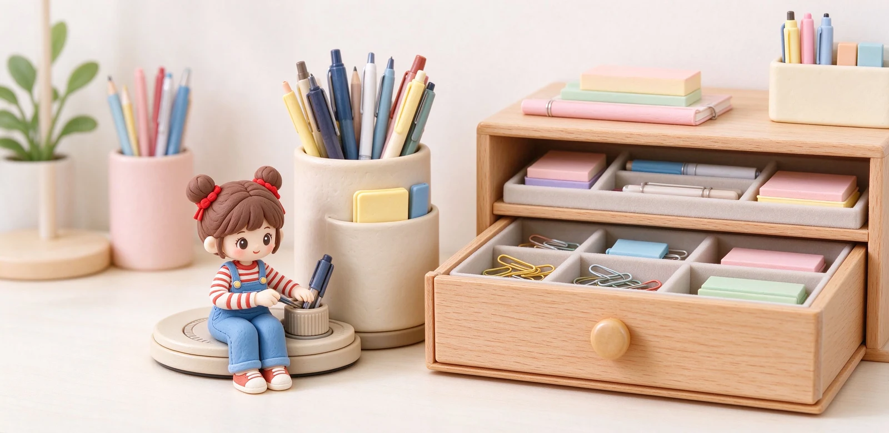

語意摘要：桌面亂通常不是東西太多，而是沒有分層。正確做法是把文具分成三區：常用區放手邊筆筒或旋轉座，備用品進抽屜收納盒，罕用或已壞的就丟。筆筒適合直立好拿、旋轉座適合分類多工具，抽屜用分格盒把小物關起來。收納的前提是斷捨離——先減物，再談收納，否則買再多收納盒也是白費。
桌面亂不是因為你懶，是沒有分層
先打破迷思：桌面亂不是因為你東西多到收不下，而是所有東西都擠在同一個平面上。筆、便利貼、手機、充電線、信件全鋪在桌面，當然看起來滿。解法不是再買一個更大的收納盒，而是把東西分層、依使用頻率歸位。
一個好用的原則是「動線」：你每天一定會碰的東西，放在一伸手就到的地方；一週才碰一兩次的，收進抽屜；一年用不到的，根本不該出現在桌面。
三區分層：常用、備用、罕用
| 區 | 放什麼 | 放哪 | 舉例 |
|---|---|---|---|
| 常用區 | 每天都用 | 手邊桌面 | 一支主力筆、螢光筆、滑鼠 |
| 備用區 | 一週用幾次 | 抽屜分格 | 備用筆、糾正帶、尺 |
| 罕用區 | 很少碰 | 櫃子或收納箱 | 季節性、過期文具 |
桌面桌面那條主軸，只留你今天會用到的。其他一律退到抽屜。你會發現桌面瞬間空出一大塊，寫字心情也跟著清爽。

筆筒、旋轉座：選哪種看你有幾支筆
筆筒是最直觀的：直立插著、伸手就拿，適合三四支每天用的主力筆。缺點是筆多了會打成一團、找不到。
如果你手邊常放十來支筆、還要放剪刀、膠水、筆擦，就考慮旋轉收納座：轉一下就看到不同格子，把筆類、工具類、小物分開。它體積比筆筒大，但分類清楚，適合桌面空間夠、工具多的人。
抽屜收納：用分格盒把小物關起來
抽屜是桌面整潔的大功臣，但很多人的抽屜一打開也是一團。關鍵是放「分格收納盒」：一個長條抽屜切成幾格，筆歸一格、釘子迴紋針一格、隨身碟與充電線一格。打開一目了然，不會翻遍整個抽屜。
小物最怕散落，一個淺盤或淺盒比深抽屜好用——深抽屜東西會埋進去忘記，淺盒讓你一眼看到底。
最難的一關：文具斷捨離
收納做再漂亮，東西只進不出，遲早又爆滿。文具控特別容易囤：試色買的、團購跟的、禮物拿到的，很多根本沒拆封。斷捨離的判準很簡單：
- 兩年沒拿過的文具 → 捐掉或送人。
- 沒墨了、斷芯、筆尖刮紙的壞筆 → 資源回收。
- 重複功能超過三支的同類筆 → 留最好用的那支。
- 會讓你有罪惡感的收藏 → 放著只會亂，不如轉讓。
常見問題 FAQ
桌面文具到底該怎麼分類收納？
筆筒跟旋轉收納座怎麼選？
抽屜一打開就亂怎麼辦？
文具斷捨離怎麼下手才不會痛苦？
桌面要留多少空間才夠用？
資料來源與核實依據
- Raymay 筆袋與收納商品線（筆筒、分層收納參考）（レイメイ藤井）
- Best Practices for Storing Ink Bottles（墨水瓶直立陰涼收納原則）（Fountain Pen Revolution）
- 2レイヤースタンドペンケース（分層直立收納概念）（レイメイストア）
相關文章推薦

筆袋選購：站立式、書本型、透明筆袋的容量與材質比較
筆袋先決定用途：考試要透明款、桌面常寫要站立式想站著好拿、帶出門要薄型好塞包，材質以聚酯與耐刮 PVC 最實用。
鋼筆筆盒怎麼選？防滾、防壓、攜帶與收藏筆盒的推薦邏輯
鋼筆筆盒的核心需求就三個：不要讓筆在裡面亂滾、不要被外面壓到、內裡要軟到不會刮傷筆身；先認這三點再談材質與外觀。

文具控養成：從亂買到系統化收藏的選物與管理方法
文具控的分水嶺不是花多少錢，而是有沒有「主題」：從看到什麼買什麼，變成為一個主題收藏，你的文具櫃才會從雜物變成寶藏。